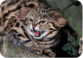
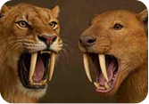
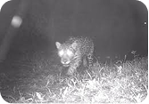
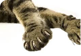
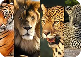
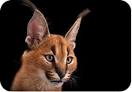
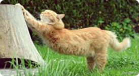
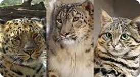
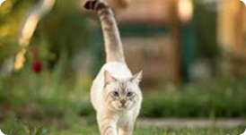
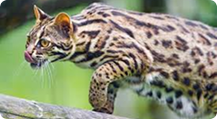

Caçadores
Espécie desenvolveu agilidade e sentidos apurados.

Instintos Antigos
Comportamentos atuais vêm de ancestrais selvagens.

Visão
Capacidade de enxergar no escuro garantiu sobrevivência.

Garras
Garras retráteis surgiram como vantagem, essa evolução ajudou na caça e na defesa.

Vários Ambientes
Espécie ocupou florestas, desertos e savanas.

Audição
Ouvidos sensíveis ajudaram a detectar presas.

Flexível
- A estrutura óssea leve e a coluna extremamente flexível permitiram aos felinos realizar grandes saltos.

Domesticação mudou gatos, mas não tudo.
- A domesticação dos gatos ocorreu de forma diferente da de outros, por isso,comportamentos como caçar, marcar território, observar silenciosamente e reagir rapidamente continuam presentes até hoje.

Cauda ajudou no equilíbrio dos felinos.
- Essa flexibilidade funciona como uma mola, ajudando o animal a ganhar impulso e velocidade em poucos segundos.
